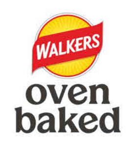

Trade Mark Journal No.2025/042 17 October 2025
UK00004271211 29 September 2025 (29,30)

- Class 29
- Potato-based snack foods; Potato chips; Soy-based snack foods; Vegetable-based snack foods; Vegetable chips; Vegetable-based spreads; Vegetable-based dips; Nut-based snack foods; Nuts; Fruit-based snack foods; Fruit-based snack bars; Plantain chips; Seeds; Meat-based snack foods; Legume-based snack foods; Legume-based spreads; Legume-based dips; hummus; Dairy-based dips; Cheese-based snack foods; Snack mixes consisting of fruits and nuts; Snack foods consisting primarily of prepared fruits, vegetables, seeds, nuts, or any combination thereof.
- Class 30
- Grain-based snack foods; multigrain-based snack foods; Snack foods made from corn; Puffed corn snacks; Popcorn; Corn chips; Tortilla chips; Snack foods made from cereals; Preparations made from cereals; Cereal-based snack bars; Breakfast cereals; Granola; Rice-based snack foods; Flour-based snack foods; Flour based chips; Pretzels; Pita chips; Pancakes; Oats; Prepared rice; Rice chips; Rice cakes; Rice crackers; Snack foods consisting principally of bread; Bagel chips; Sauces; Salsas; Pasta products; Snack foods-consisting primarily of products made from grains, corn, cereal, or any combination thereof; Confectionery made of sugar; Syrup; pancake syrup; maple syrup; topping syrup; Flavorings for beverages, other than essential oils; frozen confections.
Frito-Lay Trading Company GmbH
Representative: D Young & Co LLP